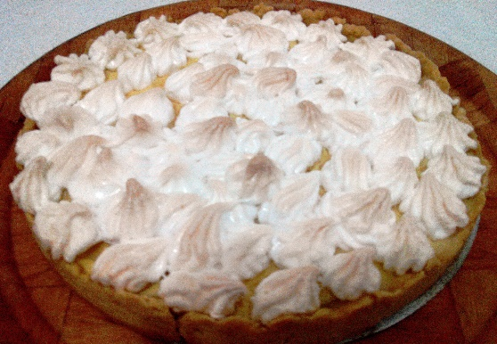
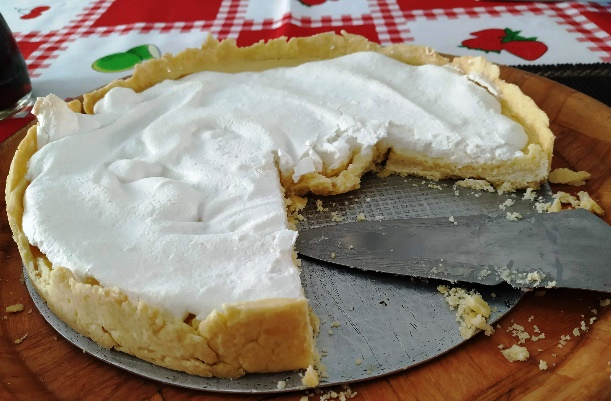
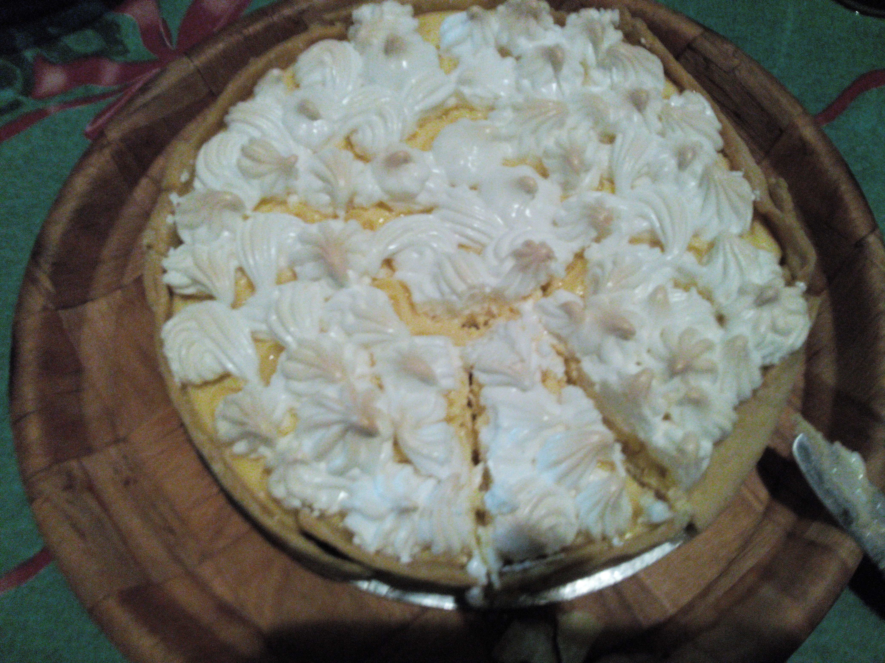
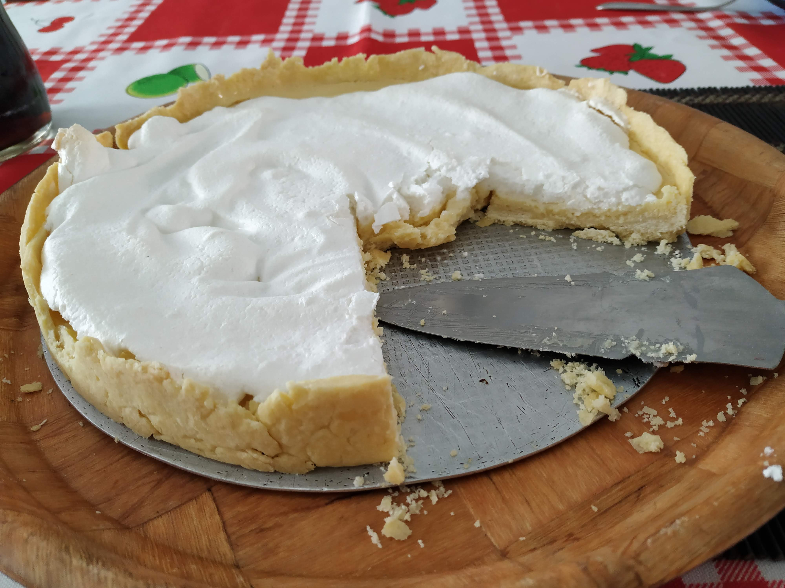

Torta de Limão
Ingredientes
- Para a massa:
- 3 xíc. de farinha de trigo
- 200 g de manteiga
- 2 gemas
- Para o recheio:
- 1 lata de leite condensado
- 4 gemas
- ½ xíc. de suco de limão
- Para a cobertura:
- 4 claras
- 8 colheres de açúcar
Modo de Preparo
Massa: misturar a farinha com a manteiga e as gemas até obter uma massa lisa e levar à geladeira por 10 minutos. Forrar o fundo e as laterais de uma forma desmontável e levar ao forno por 25 minutos. Reservar.
Recheio: bater no liquidificador o leite condensado com as gemas e o suco de limão (se quiser pode adicionar um pouco de amido de milho, 1 colher de sobremesa). Despejar sobre a massa já assada.
Cobertura: bater as claras em neve e acrescentar o açúcar até ficar um suspiro bem firme. Espalhar sobre o recheio formando picos. Levar ao forno quente até dourar (cerca de 15 minutos). Servir fria.




